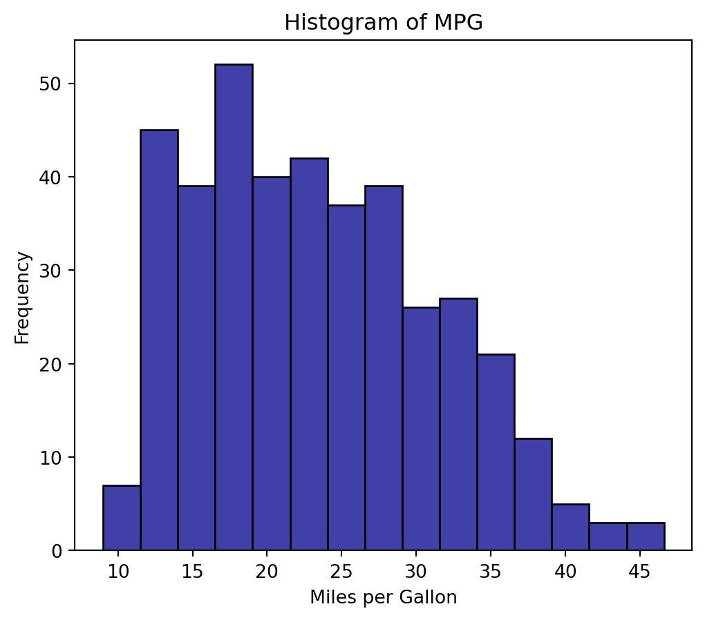
Course Recap
IN2039: Data Visualization for Decision Making
Data Visualization and Its Principles
What is Data Visualization?
“A visualization [of data] is any visual display intended to reveal evidence, making the invisible visible.” — Alberto Cairo (2015) ”
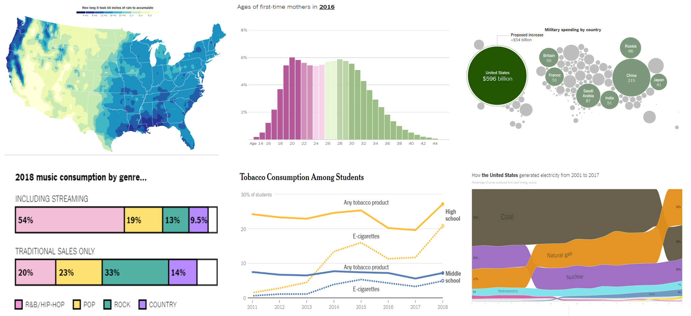
In essence, a data visualization allows you to drill down into complex data sets to gain meaningful insights through the use of graphical displays.
Data visualizations are primarily concerned with providing evidence and allowing the audience to explore and come to their own conclusions about what the visualizations reveal about the data.
As data scientists, we create data visualizations in order to understand our data and explain our analyses to other people. A plot should have a message, and it’s our job to communicate this message as clearly as possible.
The 3 Principles of Data Visualization
Principle 1: Define the message or question
Formulate the question of interest or the message you want to convey.


El mensaje puede ser una pregunta
¿Cuál es la comparación importante?
¿Cómo la enfatizamos?
Do you have reason to expect that one group/observation might be different?
Why might your finding about shape matter?
What additional comparison might bring added value to the investigation?
Are there any potentially important features to create comparisons with/against?
Principle 2: Turn data into information
Your graph should use data to communicate the message or answer the question. In other words, it should convert raw data into meaningful insights.


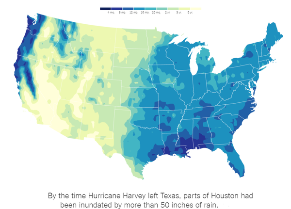
Principle 3: Apply the graphic design principles
- Objects are easy to identify by color.
- Use direct labels instead of a legend.
- Similar elements should look alike.
- Balance graphics and text.
- Be careful with default visualization settings.
- Use a grid layout to organize the visualization.

No te limites a cosas simples. Enriquece tu gráfica con símbolos de color para transmitir información adicional. Si es posible, agrega contexto con marcadores y etiquetas de referencia.
También, agrega una leyenda a la gráfica que describa las características importantes y resuma sus conclusiones.
Variable Types
Variable types
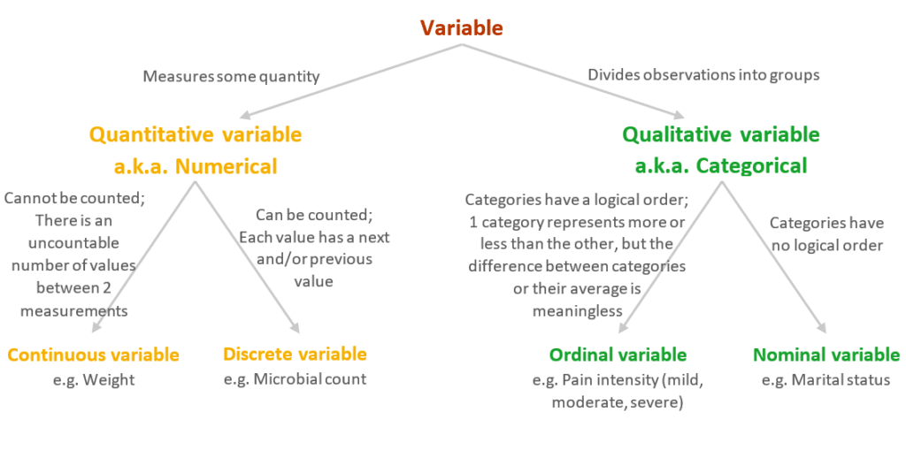
The type of variables defines our analysis
They help specify the operations, visualizations, and models we can apply to data.
There are appropriate or designed charts to visualize numerical or categorical variables.
Statistical Summaries
Statistical summaries for categorical variables
A statistical summary helps us summarize a set of observations in a simple way.
The most commonly used statistical summaries for categorical data are:
The frequency of a category is the number of observations that belong to that category.
The relative frequency is the frequency divided by the total number of observations.
Statistical summaries for numerical variables
The most commonly used statistical summaries for numerical data are:
- Average
- Variance and Standard Deviation
- Median and Quartiles
- Maximum and Minimum
Graphs by type and number of variables
Graphs for 1 variable
| Type | Graph |
|---|---|
| Categorical | Bar and Pie charts |

Graphs for 1 variable
| Type | Graph |
|---|---|
| Numerical | Histogram and Box plot |
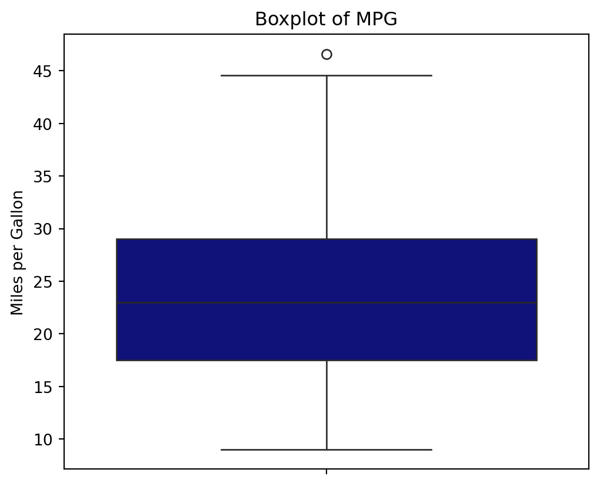
Graphs for 2 variables
| Type | Graph |
|---|---|
| Numerical | Scatter and line plots |
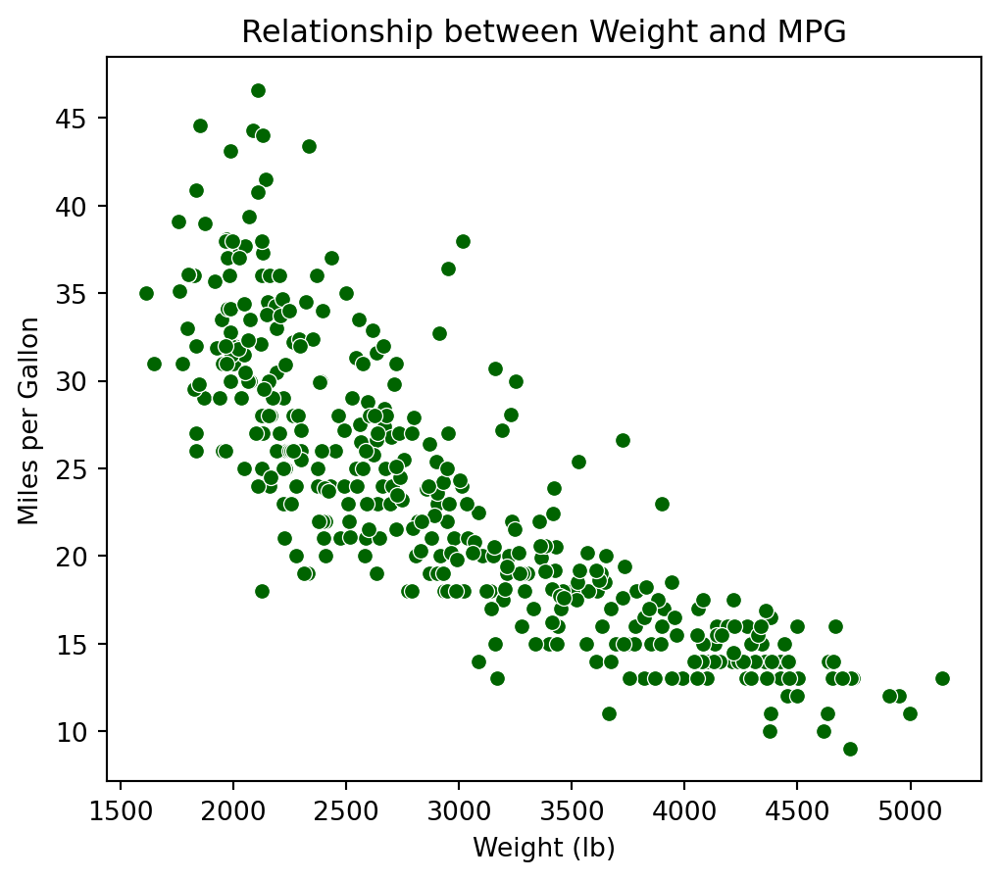
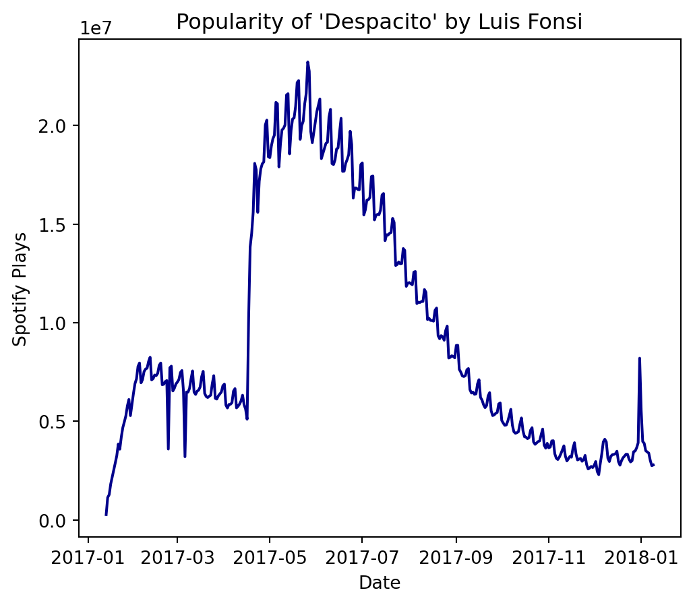
Graphs for 2 variables
| Type | Graph |
|---|---|
| Categorical | Side-by-side bars and stacked bars |
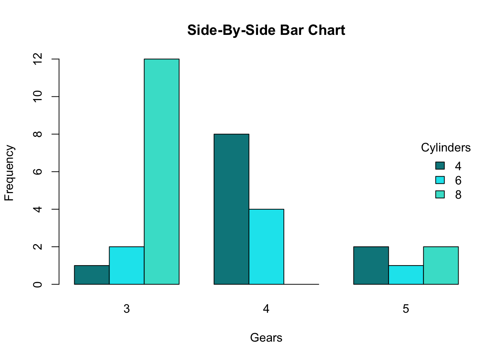

Graphs for 2 or more variables
| Type | Graph |
|---|---|
| Mixed | Cleveland, color and shape scatter plot, various lines, facets |
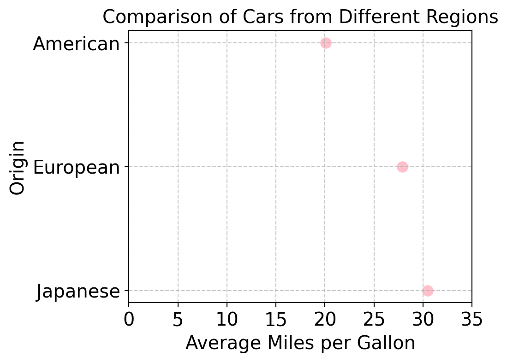
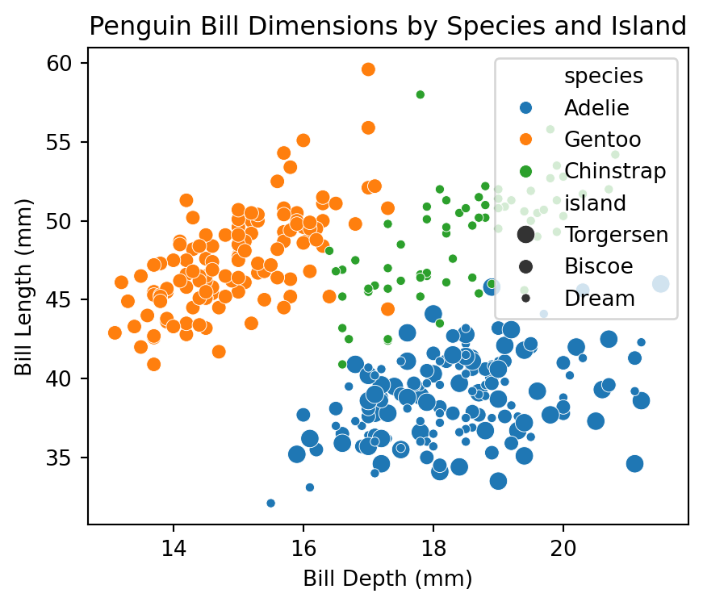
Graphs for 2 or more variables
| Type | Graph |
|---|---|
| Mixed | Cleveland, color and shape scatter plot, various lines, facets |
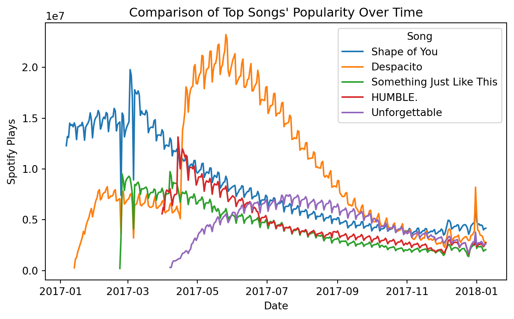
Linear Regression
Linear regression model
A very common function \(f(X)\) to predict a response (\(Y\)) is the linear regression model. It has the mathematical form:
\[ \hat{Y}_i = \hat{\beta}_0 + \hat{\beta}_1 X_i, \]
- Where \(i\) is the index of the \(n\) observations, and
- \(\hat{Y}_i\) is the prediction of the actual value of the response \(Y\) associated with a value of the predictor equal to \(X_i\).
- The values \(\hat{\beta}_0\) and \(\hat{\beta}_1\) are called the coefficients of the model.
For our example
\(\hat{Y}_i = 46.32 -0.0076 X_i\)
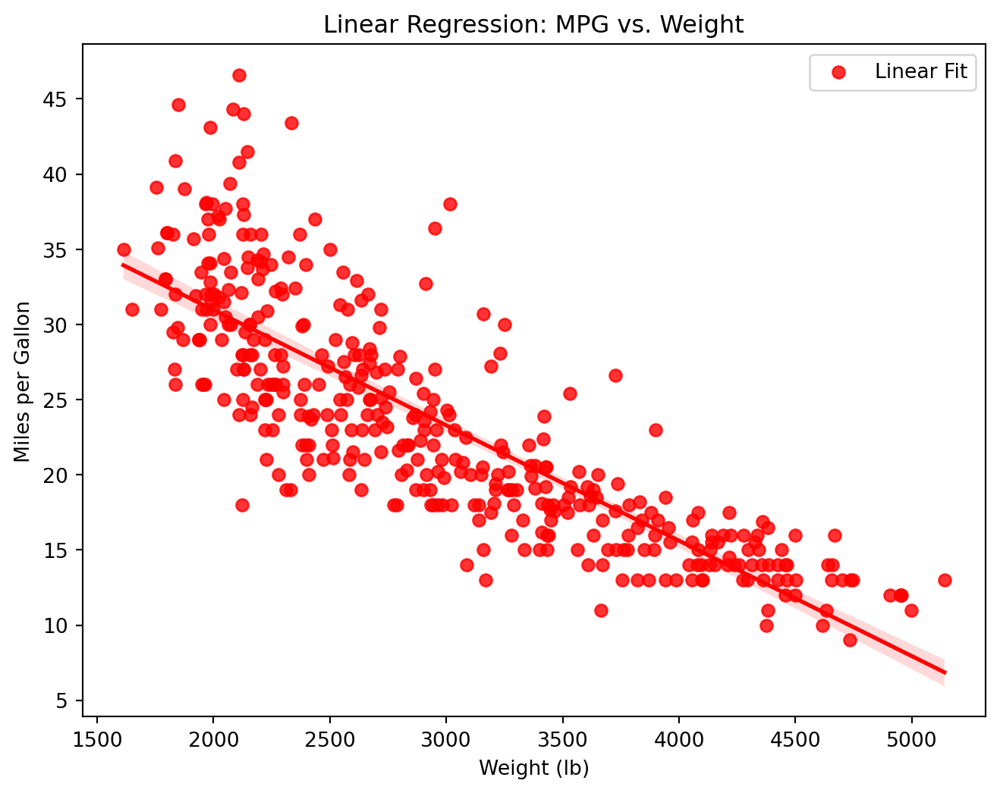
The formula
\(\text{mpg}_i = 46.32 - 0.0076 \times \text{weight}_i\)
Is this the end?
No! For more on effective visualizations, visit https://www.storytellingwithdata.com/.